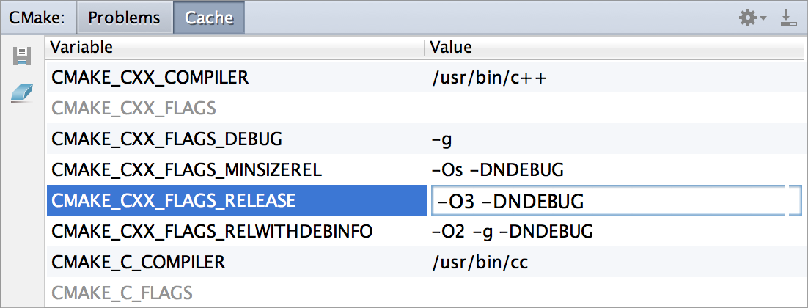

CLion для С/С++ разработчиков

CLion сейчас работает с проектами на основе системы сборки CMake, одной из самых популярных в среде C/C++ разработчиков. Все изменения в файлах CMake IDE подхватывает автоматически, но можно и сами дать команду Reload CMake Project. Отдельно вызывать команду cmake при сборке проекта тоже не надо — CLion сделает это за вас. А вот если захотите вызвать до или после сборки какие-то дополнительные скрипты, то потребуется настроить специальный внешний инструмент (External Tool) и указать фазу, когда его следует запустить. Инструментальное окно CMake покажет вам ошибки, полученные при выполнении команды cmake, а также даст возможность отредактировать переменные CMake Cache:
Кросс-платформенная и многофункциональная
Главное отличие CLion от AppCode и ReSharper C++ — кросс-платформенность. Не важно, работаете ли вы на Linux, Windows или OS X, CLion запустится на любой из этих платформ. Набор инструментов, необходимых для работы с IDE, можно найти в нашей ознакомительной инструкции. CLion — это многофункциональная IDE. В ней вы можете не только писать на C и C++ (кстати, стандарт С++11 CLion поддерживает практически полностью, а о С++14 мы активно думаем и планируем), но и заниматься веб-разработкой на HTML(5), CSS, JavaScript, XML. Некоторые другие языки доступны в виде плагинов (например, Lua). IDE интегрирована с многими популярными системами контроля версий (Git (в том числе GitHub), SVN, Perforce, Mercurial, TFS, CVS) и баг-трекерами (Jira, YouTrack, Mantis, Gitlab и др.). В дальнейших версиях мы планируем добавлять поддержку фреймворков для юнит-тестирования.
Для написания PhpStorm используется язык Java. Мы можем увеличить функциональность IDE, подключив плагины, созданные для PhpStorm, или написать собственные плагины. IDE также подключается к внешним источникам, таким как XDebug. Он включает в себя полноценный редактор SQL с редактируемыми результатами запроса. PhpStorm может обрабатывать код нескольких фреймворков, таких как Symfony, Zend Framework, Drupal, CakePHP, Magento, WordPress, Joomla, Laravel, Yii и многие другие.
О самом главном
Главное отличие CLion от AppCode и ReSharper C++ — кросс-платформенность. Не важно, работаете ли вы на Linux, Windows или OS X, CLion запустится на любой из этих платформ. Набор инструментов, необходимых для работы с IDE, можно найти в нашей ознакомительной инструкции. CLion — это многофункциональная IDE. В ней вы можете не только писать на C и C++ (кстати, стандарт С++11 CLion поддерживает практически полностью, а о С++14 мы активно думаем и планируем), но и заниматься веб-разработкой на HTML(5), CSS, JavaScript, XML. Некоторые другие языки доступны в виде плагинов (например, Lua). IDE интегрирована с многими популярными системами контроля версий (Git (в том числе GitHub), SVN, Perforce, Mercurial, TFS, CVS) и баг-трекерами (Jira, YouTrack, Mantis, Gitlab и др.). В дальнейших версиях мы планируем добавлять поддержку фреймворков для юнит-тестирования.